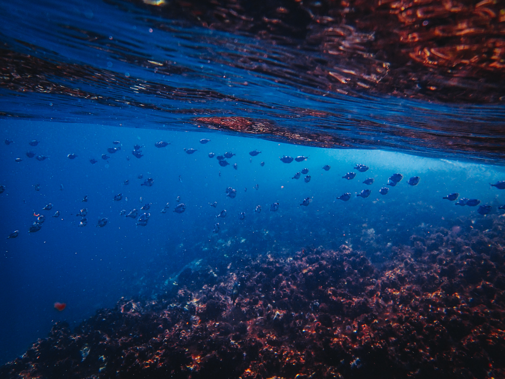
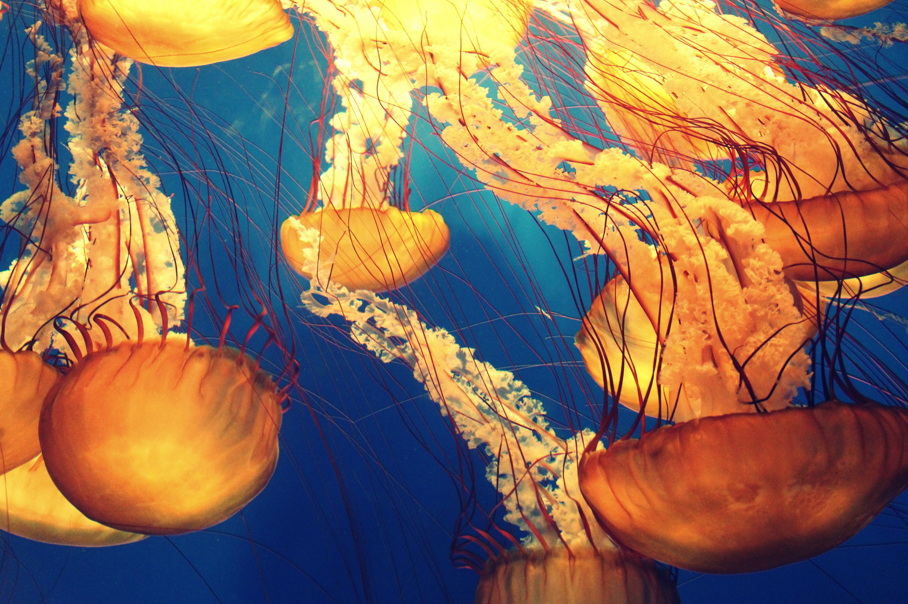
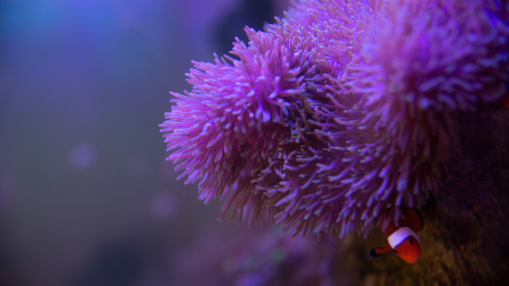
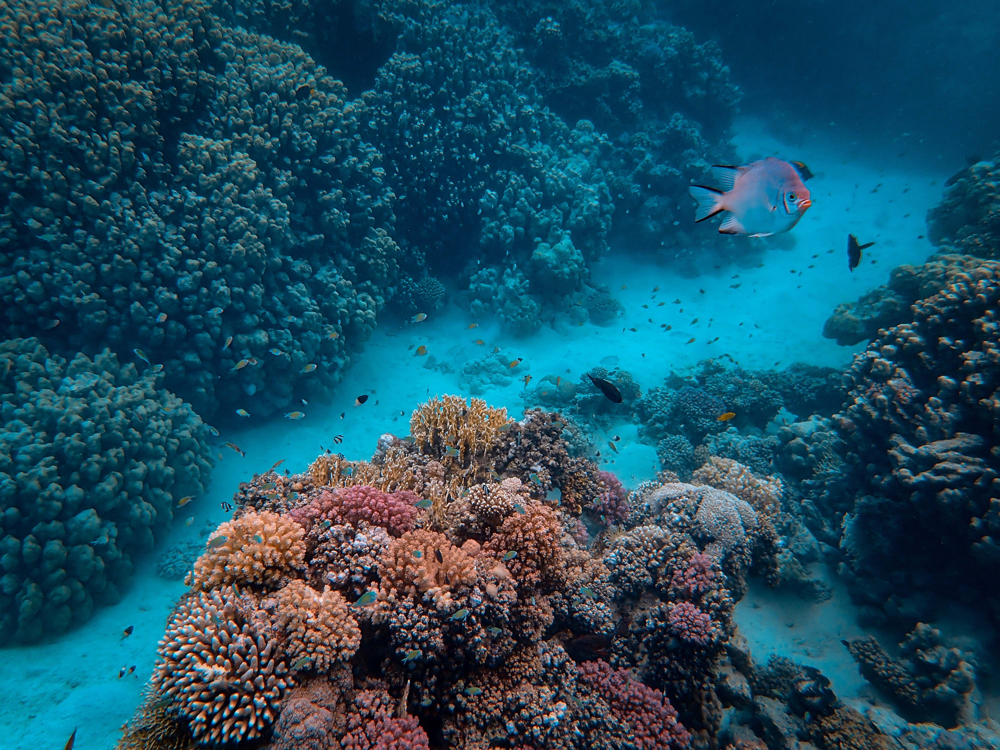

This is the happiest little clown fish.

Swimming with the familyAs close as you can get to a jellyfish without getting your eyes wet.Moody Turtle

All Jelly All the timeIs that you John Wayne? Is that Me? - Old Turtle

Dorey isn't here

Deep CNN